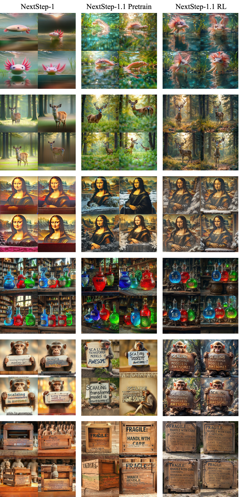
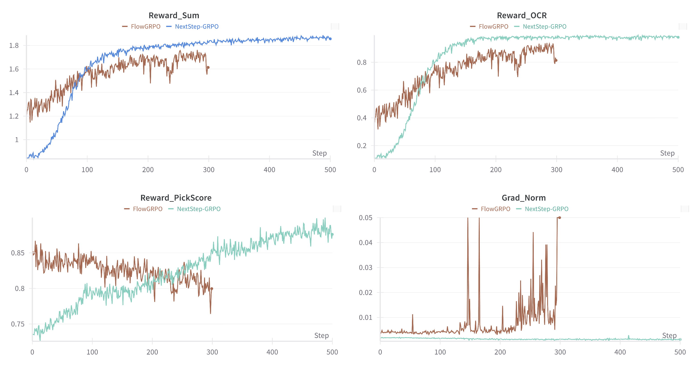
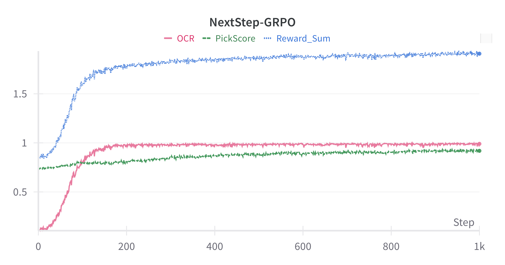

Stable post-training and NextStep-GRPO for autoregressive image generation.
Open Source: Github|Hugging Face
As shown in Fig. 1, NextStep-1.1 effectively addresses the visualization failure cases observed in NextStep-1 and delivers substantial improvements in overall image quality through extended training schedules and stable post-training.

Initialized from the NextStep-1 (256px) checkpoint, we perform continued pre-training for 300K steps at 256 resolution with a learning rate of 1e-4. This is followed by 20K steps at 512 resolution to enhance high-resolution generation capability. Finally, we conduct a 20K-step annealing phase using high-quality curated data, resulting in the NextStep-1.1-Pretrain model.
| Training Steps | Pre-Training Stage1 256px | Pre-Training Stage2 512px | Pre-Training Annealing | Post-Training SFT | Post-Training DPO / GRPO |
|---|---|---|---|---|---|
| NextStep-1 | 200K | 100K | 20K | 10K | 300 (DPO) |
| NextStep-1.1 | 500K | 20K | 20K | 0K | 1000 (GRPO) |
Starting from the NextStep-1.1-Pretrain model, we adopt full-parameter fine-tuning using FlowGRPO [1], with a composite reward model consisting of PickScore [3] (Human Preference Alignment) and OCR-based supervision [4] (Text Rendering).
As shown in Fig. 2, the original FlowGRPO configuration exhibits instability when applied to the autoregressive-like NextStep-1.1-Pretrain model. This instability manifests as gradient norm spikes and occasional collapse, reward hacking behaviors in generated images, and a consistent decline in PickScore reward during training.

To address these issues, we introduce a stabilized post-training strategy tailored for the autoregressive generation paradigm. As shown in Fig. 3, the resulting NextStep-GRPO framework significantly improves optimization stability, mitigates reward hacking, and maintains sustained reward growth throughout training. Empirically, this leads to better alignment, improved text rendering fidelity, and enhanced visual coherence.

While FlowGRPO has demonstrated strong empirical performance in diffusion models [5], directly applying it to the autoregressive NextStep-1 architecture introduces substantial instability. The root cause lies in several off-policy behaviors and numerical mismatches that become amplified under sequential generation. To resolve these challenges, we move from FlowGRPO to NextStep-GRPO, a strictly on-policy formulation that shifts the focus from aggressive convergence to stable optimization, controlled reward learning, and long-term performance scalability.
As shown in Tab. 2, we evaluate NextStep-GRPO in a standard diffusion setting using the same base model (SD3.5-Medium [5]) and identical reward models as FlowGRPO. The results demonstrate that the stabilized NextStep-GRPO achieves performance comparable to FlowGRPO, while maintaining its improved training stability properties. Notably, NextStep-GRPO slightly outperforms FlowGRPO on both PickScore and OCR metrics, indicating that the proposed stabilization strategies do not compromise performance when applied to diffusion architectures.
| Method | PickScore [3] | OCR [4] |
|---|---|---|
| FlowGRPO | 23.31 | 0.92 |
| NextStep-GRPO | 23.66 | 0.96 |
If you find NextStep useful for your research and applications, please consider starring this repository and citing:
@article{nextstepteam2025nextstep1,
title={NextStep-1: Toward Autoregressive Image Generation with Continuous Tokens at Scale},
author={NextStep Team and Chunrui Han and Guopeng Li and Jingwei Wu and Quan Sun and Yan Cai and Yuang Peng and Zheng Ge and Deyu Zhou and Haomiao Tang and Hongyu Zhou and Kenkun Liu and Ailin Huang and Bin Wang and Changxin Miao and Deshan Sun and En Yu and Fukun Yin and Gang Yu and Hao Nie and Haoran Lv and Hanpeng Hu and Jia Wang and Jian Zhou and Jianjian Sun and Kaijun Tan and Kang An and Kangheng Lin and Liang Zhao and Mei Chen and Peng Xing and Rui Wang and Shiyu Liu and Shutao Xia and Tianhao You and Wei Ji and Xianfang Zeng and Xin Han and Xuelin Zhang and Yana Wei and Yanming Xu and Yimin Jiang and Yingming Wang and Yu Zhou and Yucheng Han and Ziyang Meng and Binxing Jiao and Daxin Jiang and Xiangyu Zhang and Yibo Zhu},
journal={arXiv preprint arXiv:2508.10711},
year={2025}
}